I was fortunate to take a guided tour to Acre, an arab town north of Haifa. Thanks to Alon.
The middle east is not the middle east of CNN, yet it may be fair to say that when there is peace in Israel, that narrow eastern coast of the Mediterranean, there will be peace in the world.
Acre is representative of why. It is on trade routes connecting the West, the South, and the East, it is a natural port with sweet water and favourable geography for defence. Acre has played willing or unwilling host to almost any conqueror you might name offhand. In this place, the sun has literally baked the centuries into the earth beneath your feet; bricks, bones, bullets, battles, and all.
Unphotographable
Let me also mention what my camera couldn't capture; in the market, walking into a cloud of dust sparkling in the sun, and realising it's raw cinnamon; in the local mosque compound, sitting in the shade admiring the flowers and noticing that each new current of air is fragrant and unique, and realising that the low greenery between the flowers is mint and other aromatic herbs.
Bricks, Acre
I love bricks, in case you hadn't already noticed.

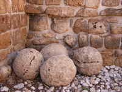

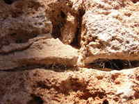

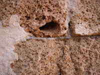

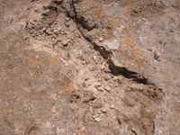

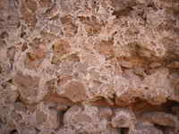

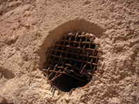

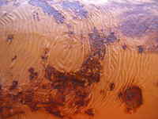

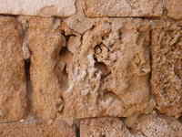

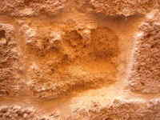

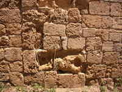

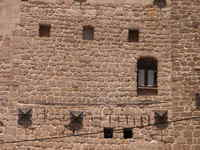
Flora (Acre)
I visited Acre in early May; it's wetter up north and the flowers hadn't all dried out yet.

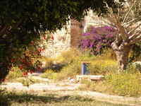

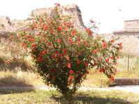

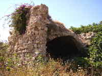

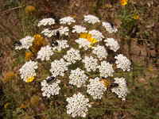
Friends
The tour guides were obviously great friends, and this made a big difference. Actually, these two were a bit more than tour guides, and that made a big difference too.
To know more, go to Acre and ask anybody for Abdu. Yes, it does sound like something out of Casablanca. But it's true.


Streetscapes (Acre)
Acre kind of reminds me of Venice, but dried.

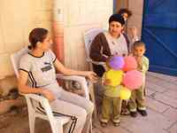
.jpg){kind=link}
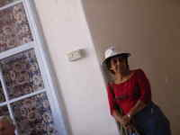

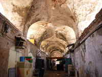

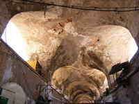

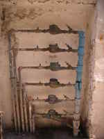


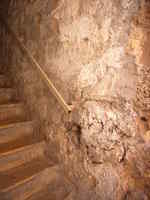

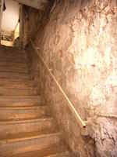

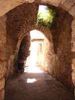

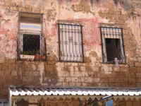